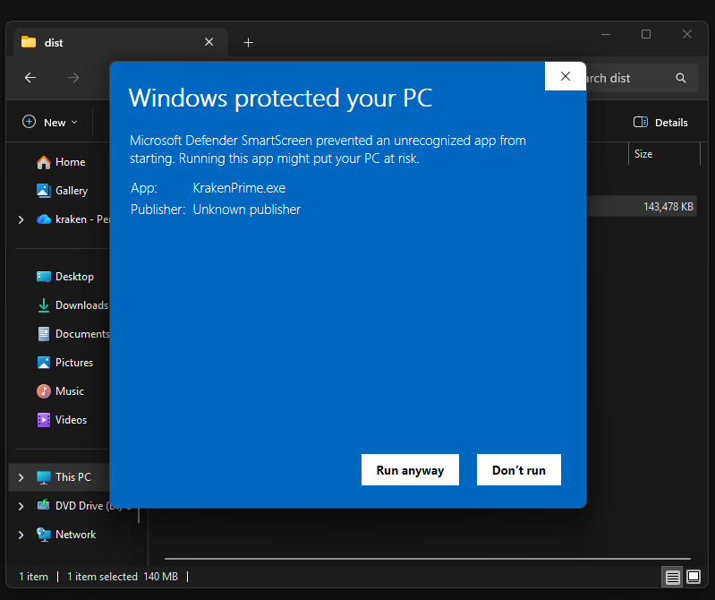
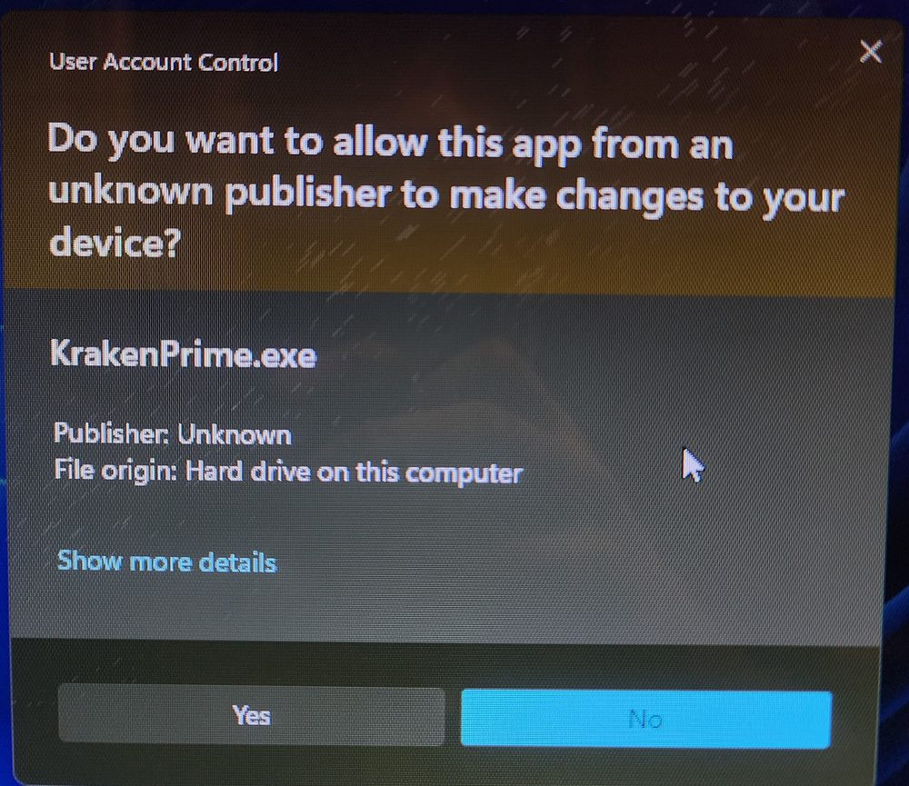

Everything you need to get Kraken Prime up and farming — from first launch and LDPlayer setup through the guided setup battle, presets, and auto-upgrade. Steps 1–4 are required; 5 and 6 are optional.
Prefer to watch? This covers the same ground as the written steps below — launching Kraken Prime, running the guided setup, and reading the readiness checklist.
Walkthrough: launching Kraken Prime and reading the readiness checklist.
1
First run
Kraken Prime is a single executable. There is no installer, and nothing is written to your registry or Program Files.
Put it in its own folder — for example C:\KrakenPrime\. It creates a data\ folder beside itself for your settings, so give it somewhere tidy to live.
Double-click it. Windows SmartScreen will warn you because the build is unsigned — click More info, then Run anyway.

SmartScreen flags the app because it isn't code-signed, not because anything is wrong with it. The Run anyway button only appears after you click More info.

KrakenPrime also asks for administrator rights on first launch. Choose Yes — it won't finish starting up otherwise.
You'll get a loading splash, then the main window. The sidebar has Dashboard, Configuration, Auto Upgrade, Live Preview, Raid History, and Donation. Everything in this guide happens in Configuration until the last step.
Keep the folder put. Your pinned coordinates and settings live in data\ next to the exe. If you move the exe later, move that folder with it or you'll be re-running the guided setup.
2
LDPlayer & ADB
Kraken Prime drives Clash of Clans through an Android emulator. It bundles its own copy of ADB, so there is nothing extra to install on the Windows side.
Install LDPlayer and open Clash of Clans in it at least once.
Set the emulator resolution to 1600 × 900. In LDPlayer: Settings → Display → Resolution → Custom, then enter 1600 and 900.
Turn on ADB: Settings → Other settings → ADB debugging → Open local connection.
Restart the emulator so both changes take effect.
Leave Clash of Clans open on the home village screen before you start any setup.
The resolution really matters. Kraken Prime finds buttons by matching reference images captured at 1600 × 900. At any other resolution the matching degrades and the bot will fail to find the Attack button. This is the single most common cause of "it doesn't do anything".
3
Configuration
Open the Configuration tab. You're telling the bot what your army looks like and what counts as a worthwhile raid. Fill these in before running the guided setup — the setup uses these numbers to know how many things you'll be pinning.
Troops & spells
Troop Types — how many troop icons sit in your army bar (not the total troop count).
Heroes — how many hero icons. Enter 0 if you have none.
Spell Types — how many spell icons. 0 is fine.
Per-type counts — for each type, how many to deploy per raid. These boxes appear once you've set the type counts above.
Sleep schedule optional
Rather than farming non-stop, the bot can work for a stretch, idle on your home village for a break, then resume — repeating all day.
Work period and Work randomness ± — e.g. 60 and 5 farms for a random 55–65 minutes.
Sleep at least / at most — e.g. 20 and 30 breaks for a random 20–30 minutes. Breaks are capped at 30 minutes.
Both spans are re-rolled every cycle, so the on/off pattern doesn't repeat identically. A raid already in progress is always finished before a break starts. For longer farming stretches, raise Work period — it has no upper limit.
Loot & targets
Minimum Gold — skip any base below this.
Minimum Elixir — optional second criterion. A base qualifies if it beats either threshold.
Elixir needs two things. It's only used as a raid criterion when Minimum Elixir is above 0 and an elixir scout box has been drawn. You'll draw that box during the guided setup in the next step. Until both are true, scouting stays gold-only.
Hit SAVE ALL SETTINGS when you're done.
4
Guided setup
This is the important one. The bot enters a real battle so you can show it where everything is on your screen. No troops are deployed automatically — you're only pinning coordinates.
With Clash of Clans on the home village, click RUN FULL GUIDED SETUP at the bottom of the Configuration tab. It will:
Clear any popups on your village.
Tap Attack.
Tap Find a Match.
Tap Attack! to confirm, then wait for the battle screen to load.
Open the army bar planner — see below.
Zoom the camera out.
Open the deployment planner — see below.
End the battle and return home.
Army bar planner
A window opens over a live screenshot with a layer list in the top-right. Pick a layer with its radio button, then mark that layer's positions.
Troops, Heroes, Spell 1…n — click each matching icon in the army bar at the bottom of the screen. Click them in order; the counter next to each layer turns green when it matches your configured count.
Gold box and Elixir box — these are drag layers, not click layers. Drag a rectangle tightly around each loot number at the top of the screen. This is the same screen the bot reads when scouting, which is why both are pinned here.
Elixir is optional — skip it if you only farm gold. Tick View all to see every layer at once. Then Save & Close.
Deployment planner
Same idea, on the zoomed-out battlefield. One layer per troop type, plus Heroes and each spell type. Select a layer, then click on the map wherever you want those troops dropped. The counter shows progress against the per-type counts you set in step 3. Save & Close when every layer is green.
Re-pinning later. You don't need to re-run the whole guided setup to adjust things. EDIT PIN TROOP BAR SLOTS and EDIT DEPLOYMENT reopen the same planners any time, and the EDIT GOLD / ELIXIR SCOUT BOX buttons re-draw just those boxes.
5
Deployment presets optional
By default every raid uses the same deployment points. Presets let you save up to four different attack layouts and rotate between them.
In Configuration, turn on Enable preset mode.
Choose a Deployment mode — sequence cycles through them in order, random picks one per raid.
Click Add deployment preset, then pin that preset's points in the planner that opens.
Each preset stores its own troop, hero, and spell points. When preset mode is on, the main deployment points are ignored, and the Live Preview shows only the preset currently in use.
6
Auto-upgrade optional
On the Auto Upgrade tab the bot can spend loot for you between raids. There are two modes.
Automatic — uses Clash's own builder suggestions list. It opens the builder menu, finds a wall suggestion, maximises the batch, and confirms only while the cost is affordable. Nothing to pin.
Manual — triggers when a storage is full. Needs more setup: capture a "full" reference clip for gold and/or elixir, and pin the wall and building buttons and targets.
Start with Automatic. It needs no coordinates and is much harder to get wrong. Use Test to run one upgrade pass against the current screen — make sure the emulator is on the home village first.
7
Start farming
Before starting, read the Setup Readiness checklist at the bottom of the Configuration tab. It validates your live settings against the files you've pinned.
✅ green — good to go.
⚠ amber — works, but something is unused or inconsistent. Worth reading.
❌ red — will block the bot from starting. Fix these first.
With Clash of Clans on the home village, click START BOT. The Dashboard shows:
Total Raids — raid attempts this session.
Uptime — how long the bot has been running.
Working / Sleeping — if you set up a sleep schedule, this counts down to the next switch. Reads — when no schedule is set.
System Logs — live output. This is where you look when something misbehaves.
The Live Preview tab shows the current emulator screen with your pinned points drawn on top — the fastest way to confirm your coordinates line up with what the game is actually showing.
Troubleshooting
Windows says the app is unrecognised
The build is unsigned. Click More info → Run anyway. If your antivirus quarantines it, add its folder as an exclusion — single-file bundles are a common false positive.
"Could not find Attack button"
Almost always the emulator resolution. Confirm LDPlayer is at 1600 × 900 and restart it. Also check Clash is on the home village and not sitting behind a popup or event dialog.
Troops deploy in the wrong places
Your pins were made against a different camera position. Reopen EDIT DEPLOYMENT and re-pin. Check the Live Preview afterwards to confirm the dots sit where you expect.
Minimum Elixir seems to be ignored
Elixir only counts when Minimum Elixir is above 0 and an elixir scout box exists. Use EDIT ELIXIR SCOUT BOX, or re-run the guided setup and draw it in the army bar planner. The readiness checklist warns about exactly this case.
The bot stops finding anything after a while
Clash drops its connection when left idle and covers the screen with a RELOAD button. The bot taps it and waits for the Attack button to confirm the village is back — but it needs a reload_btn.png reference in its templates\ folder to recognise it. Crop that button from a 1600 × 900 screenshot if your build doesn't include one.
Settings vanished after moving the exe
Configuration lives in the data\ folder next to the executable. Move that folder along with the exe, or re-run the guided setup in the new location.
Ready to start?
Grab the latest build and work through steps 1–4. Fifteen minutes and you're farming.